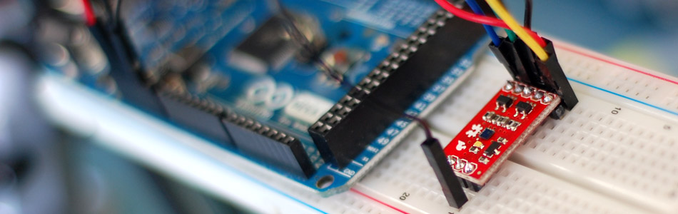

Sensing color with the ADJD-S311 + Arduino

A few things you should know about the ADJD-S311 before we dive in too deep: I have never been able to get perfect color sampling from this guy without limiting the colors it would detect to just 6, and accurately reproducing color on an LED is not as simple as one would hope. The color reading from the sensor could be spot on, but the reproduced color on the LED may be way off. (you can blame your eyes and the LEDs)
Hooking it up
The ADJD-S311 is an I2C device (I2C is a 2-wire serial connection), so we just need to connect the SDA (Data) and SCL (Clock) lines to your Arduino for communication. On your Arduino (everything but the Mega) SDA is on analog pin 4, and SCL is on analog pin 5. On an Arduino Mega, SDA is digital 20, and SCL is digital 21. (The Arduino Leonardo will also be different). Other than these 2 lines, we just need to connect power (3.3v), ground, and the onboard LED to digital 2 (you can change that in code if you want).
The ADJD-S311 has 4 sensors built into it to detect Red, Green, Blue, and Clear. It reports back an individual reading from each sensor. The white, or clear, sensor is mainly for sensing brightness.
{kind=link}
{kind=link}
Code
The code for this guy is long and obnoxious, so we made a library out of it. This code is based on the sparkfun code, that was based on the old bildr code, that was based on the code by Marcus over at Interactive Matter. I love open source!
This library is really simple, you can call 'calibrate' in order to calibrate the color white (make sure you have a white objet or light source in front of it when you do this). You can also turn the LED on and off, and you can read. Reading gives you back a RGBC (red,green,blue,clear) variable that has the readings from the sensor. See the code for how to use it.
To make this code work, before you load the code, or even open the Arduino program, we need to place the "ADJDS311" folder into your Arduino Library. If you don’t know where that is by default, Look to the right.
If you click the download button to the right of “Arduino” you can download the whole thing as a zip, so you dont need to copy all the files.
Default Library Folder Location
On your Mac:: In (home directory)/Documents/Arduino/libraries
On your PC:: My Documents -> Arduino -> libraries
On your Linux box:: (home directory)/sketchbook/libraries
Article taken from bildr.org with minor changes - I am the original author of this content